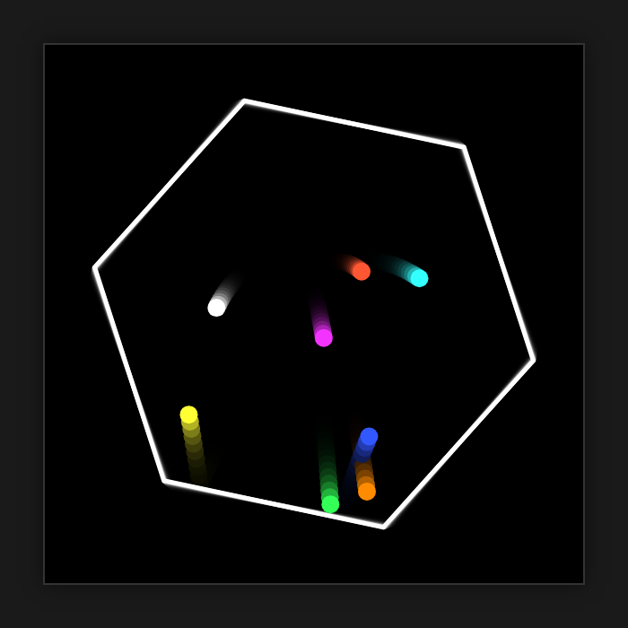

gemma 4 12b qat 맥 스튜디오 실측 결과
맥 스튜디오 M5 Max(48GB) 환경에서 가벼운 로컬 AI를 원하고, 빠른 응답 속도와 자연스러운 한국어가 중요한 사용자에게 적합합니다.
gemma 4 12b qat-OptiQ-4bit 모델을 맥 스튜디오 M5 Max에서 mlx-lm 0.32.0으로 측정했습니다. 짧은 입력(512토큰) 기준 답 쓰는 속도는 초당 53.6토큰으로, 사람이 읽는 속도(초당 약 5토큰)보다 훨씬 빠릅니다. 가중치 용량은 9GB이며, 실행 중 최대 메모리 사용량은 10.7GB로 확인되었습니다.
이 맥에서 잰 숫자
| 모델 | gemma-4-12B-it-qat-OptiQ-4bit |
|---|---|
| 원본 저장소 | mlx-community/gemma-4-12B-it-qat-OptiQ-4bit |
| 가중치 용량(GB) | 9 |
| 라이선스 | apache-2.0 |
| 측정 기기 | 맥 스튜디오 M5 Max, 통합 메모리 48GB |
| 측정 도구 | mlx-lm 0.32.0 (MLX 0.32.3) |
| 측정일 | 2026-10-20 |
| 짧은 입력(512토큰) 답 쓰는 속도(토큰/초) | 53.6 |
| 짧은 입력 읽는 속도(토큰/초) | 1838 |
| 긴 입력(4096토큰) 답 쓰는 속도(토큰/초) | 50.9 |
| 긴 입력 읽는 속도(토큰/초) | 2083 |
| 최대 메모리 사용(GB) | 10.7 |
| 한국어 답변 점수(5점 만점) | 5 |
| 한국어 답변에 외국어 섞임 | 없음 |
| 한국어 객관식(KMMLU 50문항) 정답 | 26 / 50 |
| 도구 호출 정확도(10문항) | 10 / 10 |
| 파이썬 코딩(10문제, 테스트 전부 통과) | 10 / 10 |
| 형식 지시 따르기(10문항) | 10 / 10 |
| 긴 글 속 문장 찾기(약 16K토큰) | 찾음 (9.7초) |
| 긴 글 속 문장 찾기(약 32K토큰) | 찾음 (21.2초) |
| 한 번에 만든 튀는 공 애니메이션 | 움직임 |
답 쓰는 속도는 1초에 만들어 내는 토큰(글자 조각) 수입니다. 같은 모델도 기기·메모리·도구 버전에 따라 달라집니다.
한국어로 물어봤더니
질문: 맥에서 로컬 AI 모델을 처음 써 보려는 대학생에게, 장점 두 가지와 주의할 점 한 가지를 한국어로 짧게 알려 줘.
맥에서 로컬 AI 모델을 처음 시작하려는 대학생을 위해 핵심 내용을 정리해 드릴게요. **장점 두 가지** 1. **개인정보 보호 및 보안:** 데이터가 외부 서버로 전송되지 않고 내 컴퓨터 안에서만 처리되므로, 민감한 과제나 개인적인 데이터를 안심하고 입력할 수 있습니다. 2. **비용 절감 및 무제한 사용:** 한 번 모델을 설치하면 API 호출 비용이나 월 구독료 없이 원하는 만큼 자유롭게 질문하고 테스트할 수 있습니다. **주의할 점 한 가지** * **하드웨어 리소스 소모:** AI 모델을 돌릴 때 CPU와 GPU, 특히 메모리(RAM)를 많이 사용하기 때문에, 실행 중에는 컴퓨터가 느려지거나 발열이 발생할 수 있으니 사양에 맞는 모델 크기를 선택하는 것이 중요합니다.
요청된 형식과 내용을 정확히 전달하며 문장이 매우 자연스럽습니다.
한 번에 만든 튀는 공 애니메이션
"회전하는 육각형 안에서 공 8개가 튀는 HTML 을 한 파일로 만들어 줘"라는 요청에 처음 낸 답을 그대로 실행한 화면입니다.

이럴 때 맞아요
- 맥 스튜디오 M5 Max(48GB) 환경에서 로컬 AI 구동
- 자연스러운 한국어 답변과 빠른 응답 속도(초당 53.6토큰)가 필요한 경우
- 도구 호출(10/10) 및 형식 지시(10/10) 정확도가 중요한 자동화 작업
이럴 때는 다른 모델을
- 매우 긴 문맥(32K 이상) 처리 시 21.2초 소요로 지연이 허용되지 않는 실시간 대화
- KMMLU 객관식 정답률(26/50)이 중요한 고난도 지식 검색
- 48GB 미만 통합 메모리를 가진 맥 기종(최대 사용량 10.7GB 기준 여유는 있으나, 더 큰 모델 대비 제한적)
자주 묻는 질문
gemma 4 12b qat 모델의 답 쓰는 속도는 얼마나 되나요?
짧은 입력(512토큰) 기준 초당 53.6토큰, 긴 입력(4096토큰) 기준 초당 50.9토큰으로 측정되었습니다. 이는 사람이 읽는 속도(초당 약 5토큰)보다 훨씬 빠릅니다.
이 모델을 돌리려면 맥에 메모리가 얼마나 필요하나요?
가중치 용량은 9GB이며, 실행 중 최대 메모리 사용량은 10.7GB로 측정되었습니다. 측정 기기는 통합 메모리 48GB인 맥 스튜디오 M5 Max였습니다.
한국어 답변 품질은 어떤가요?
한국어 답변 점수는 5점 만점에 5점이며, 외국어 섞임은 없었습니다. 요청된 형식과 내용을 정확히 전달하며 문장이 매우 자연스럽다는 평가를 받았습니다.
긴 문서에서 문장 찾기 성능은 어떤가요?
약 16K토큰 문서에서는 9.7초, 약 32K토큰 문서에서는 21.2초에 문장을 찾았습니다.
코딩 및 도구 호출 능력은 어떤가요?
파이썬 코딩 10문제 모두 테스트를 통과했으며, 도구 호출 정확도도 10문항 중 10문항을 정확히 수행했습니다.
측정 방법
맥 스튜디오 M5 Max, 통합 메모리 48GB에서 mlx-lm 0.32.0 (MLX 0.32.3)로 측정했습니다. 입력 512토큰·4096토큰 뒤 128토큰을 생성하는 시험을 여러 번 반복한 평균이고, 한국어 답변은 온도 0으로 한 번 생성한 원문 그대로입니다(생각 과정은 떼고 답만). 추가 시험(있는 경우)은 모두 코드로 채점합니다: 한국어 객관식은 KMMLU(HAERAE-HUB, CC BY-ND 4.0) 10개 분야 50문항, 도구 호출·파이썬 코딩·형식 지시는 각 10문항(코딩은 인터넷이 막힌 환경에서 숨겨진 테스트 실행), 긴 글 찾기는 약 1만6천·3만2천 토큰 글 속에 넣은 문장을 찾는지, 튀는 공은 한 번에 만든 HTML 이 실제로 움직이는지입니다. 생각 기능은 끄고 온도 0으로 실행했습니다. 가중치는 Hugging Face의 mlx-community/gemma-4-12B-it-qat-OptiQ-4bit를 썼습니다.
측정일 2026-10-20 · 커밋 한 모금